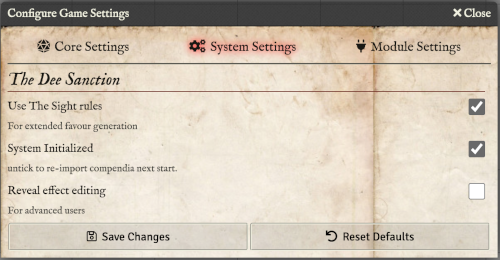
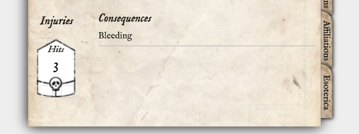
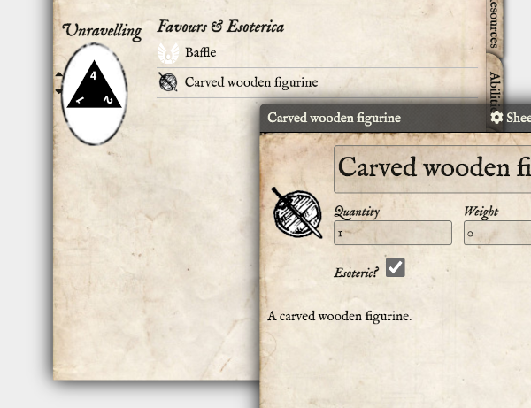
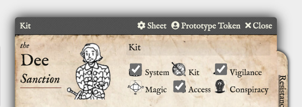
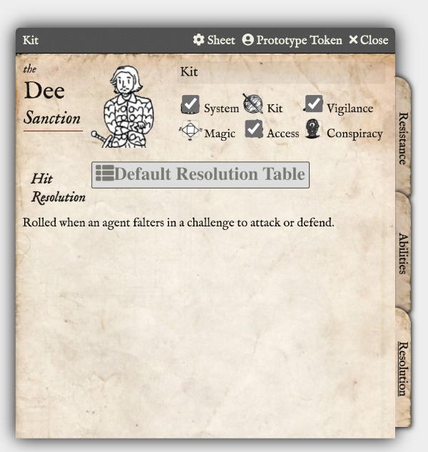
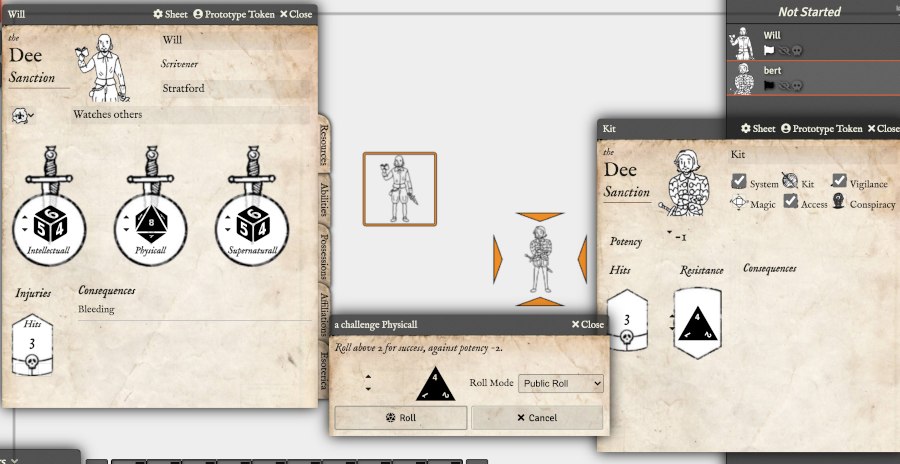

The Dee Sanction
Unofficial system for Foundry VTT
Introduction
This is an unofficial, third-party implementation of the excellent Dee Sanction core rules, copyright Paul Baldowski and used with his kind permission.
You need to get The Dee Sanction rules in order to play. You will also find a wealth of inspiration for your game at their site, too.
For further documentation on how to use Foundry VTT please go to Foundry VTT Knowledge base.
Installation
You'll need a Foundry VTT License or GM access to a Foundry VTT server.
- Launch Foundry VTT.
- Go to the Game Systems tab, then click Install System.
-
Find
'The Dee Sanction'and click Install. - Create World using the The Dee Sanction system.
When you have created a world and enter it for the first time, you will be presented with a dialog asking you to import all the content from the compendia that come with the system. You should really do this, as the system will not work as designed without the base content in place.
When you import, this dialog will not be shown again, unless you go into settings to untick the Initialized setting.
If something goes wrong, or you're upgrading,it's advisable to Delete All. This will remove all compendia content as if you've just installed. You will need to import after this.
If you click Don't show this again, it will not import, and tick this setting without importing...this is not advisable, but you are the master of your own destiny...
Settings
The System settings are to control system-wide behaviours, and you can access them under the Configure Settings dialog from the Foundry VTT sidebar.

- System Initialized
-
The Dee Sanction system needs to import all of the compendium content when a world is first created.
This is because there are a number of "container"-like items that need to be able to find and
resolve their named references to behave correctly. When you load the world for the first time,
you will be presented with a dialog asking you to import the content, or not to show this dialog
again in the future. By unticking this option, you will re-enable the prompting to import.
- Reveal effect editing
-
The Dee Sanction system uses the Foundry VTT Active Effects to model the game mechanics
of Consequences but it's possible to add effects directly to characters and any items.
This can enable you to create your own custom effects. In the future, I'll wrap a more user-friendly
interface over this like I've done with Consequences, but for now, you can get to these effects by
ticking this box. It will add a new tab (for the GM) to character and item sheets.
For advanced users only!
Agents
Header
The top of the character sheet header contains text fields you can edit directly for the agent's name, home and mannerism.
The current tradecraft for the agent (as chosen by the group) can be selected using the drop-down.
The agent's current occupation will be automatically displayed here when set (see below)
Resources
The default tab covers the basic resources of the character.
The three resources are in three columns at the top.
They each start with the default d6 die, and you can alter them using the up and down icons.
To roll a challenge using one of the resources, click on the die icon. The die presented in the dialog that pops up takes into account any step-downs you may have accrued from any lingering consequences, and the potency and/or consequences of an enemy you are currently targeting.
On the second row there is an Injuries field where you record your current Hits, with two tick boxes to record any falters accrued whilst at zero Hits.

Next to this is a space to collect consequences, in the event of any falters. These can be dragged from the consequences folder under Items, or from the chat dialog if one is presented as a result of a roll.
Abilities
The first row contains any Abilities the agent has. These can be dragged from the Abilities folder.
If you want to create a new ability just for this agent, you can do this by clicking the plus button. Normally you would choose an existing ability and drag it from the item sidebar. You can open the abilities with the pen icon and delete it with the trash icon.
Next row contains a place to record the agent's Fortune, and next to this a place to drag the agent's Focus and Occupation(s).
Each of these entries can be expanded to see the description and the associated abilities. Any ability the agent already has will show as ticked off.
Possessions
On the left is a place to record if the agent has any armour or defence. It starts blank (no armour) but can be increased by clicking the up arrow.
All other mundane items will appear in the list to the right, when dragged onto the character sheet. You can also create a new item by clicking on the plus sign.
Affiliations
This tab is where the agent's associations with any organisation can be dragged onto the sheet. As with occupations and foci, affiliations can be clicked on to expand and see the description and any associated abilities for that affiliation.
Esoterica

This tab is where the agent's unravelling die is set. As with other resources, it can be decreased by clicking the down arrow, and clicked on to roll for unravelling.
Next to this are any angelic Favours the agent has (which can be dragged onto the sheet) and any items that the agent possesses that were marked as esoteric.
When the unravelling die is rolled, and the agent falters, a button is presented to roll for the consequences of unravelling. Any lingering consequence that may occur from that will appear in the chat card, and it should be dragged onto the agent's sheet.
Enemies

Header
The first row below the name the various marks of tradecraft that are required to defeat this enemy. They can be clicked on to select them.
Resistance
Here you can record the potency of the enemy. A negative number indicates a step-down die.
Below this is the enemy's Hits, and their Resistance die. These work in the same way as for agents.
Finally, there is a list of any lingering consequences the enemy might be suffering.
Abilities
Drag or create new abilities for the enemy here.
Resolution

This is the Resolution table to use when an agent is fighting the enemy. Create the resolution table as a separate RollTable in Foundry, and drag it onto this sheet here. It will automatically get used when an agent falters in a challenge to attack or defend against this enemy.
Combat
Initiative
Any actor dragged onto the combat tracker will be determined as being either a friend, enemy or neutral, based on their Token Disposition. Make sure you set the default token disposition to be Friendly for agents, and Hostile for enemies.
Click on the dice icon to roll initiative by Taking a Challenge, which will determine whether the agents or enemies act first. Neutral parties always go last.
Targeting

If an agent or enemy is fighting another actor, make sure you target them in Foundry to ensure that the relevant potencies, consequences and resolution tables are activated for each agent's challenge.
Faltering
If an agent falters in a challenge, this will be indicated in the chat window for the dice results. Two buttons will then be presented. The player should click the button to indicate whether this was a falter in an attacking or a defending move.
When clicking one of those buttons, a roll on the enemy's resolution table will then happen, and indicate any lingering consequences that might apply.
Items & Abilities
When the compendia have been loaded, you will see folders for the following Foundry Items:
Abilities
These are the collection of abilities that are referenced by the various associations, occupations and foci an agent may have.
They may give inspiration for role-playing, but in Foundry terms they are simply descriptive text items you can drag onto your sheet.
Associations
These are the various societies, brotherhoods and affiliations an agent may be associated with. They have a text description and a collection of associated abilities.
If you are creating your own associations, simply drag any abilities onto the sheet.
Clothing
This is a collection of Mundane possessions of clothing.
Consequences
These are things describing lingering consequences, and describe which resource they affect, and the potency of its effect.
They are referenced in the various Unravelling table entries and can be used with your own RollTables.
Favours
This is the set of angelic magic that might be bestowed upon an agent.
Foci
Like associations, a focus gives a description, and a collection of abilities associated with it.
Occupations
Similarly, occupations also give a description and the collection of associated abilities.

Odds and Ends
These are the collection of possessions that don't fit into any other category. Remember to use the Esoteric tickbox to indicate if an item is magical. This will then ensure it appears under the Esoterica tab of the agent's sheet.
Printed Matter
These are the things of a literary, legal or otherwise written form.
Tools
The collection of useful tools an agent might have.
Weapons
And finally, the set of weapons.
Tables
Foundry is very good at enabling you to create custom rolltables. You can make a rolltable from a folder, such as one of those above, by right clicking on the folder, and selecting "Create Rollable Table".
This way you can very easily create a random assignment of possessions, associations and occupations, etc. When rolled on, the random item will be displayed in the chat window, and can be dragged onto character sheet from there.
Several tables are preloaded.The Default Resolution Table can be dragged onto an enemy sheet, for use in combat, or you can design your own, and drag that on instead.
The other tables provided are for the Unravelling. The Unravelling Table is used when you roll for unravelling on your sheet and falter. The button in the chat window then uses this table to determine the results of both the immediate and linger consequences.
There are also rolltables for each of the humours. Depending on which humour is rolled on the unravelling table, the appropriate Humour table will also be rolled for the lingering consequence. This will be displayed in the chat window and should be dragged onto the agent's sheet.